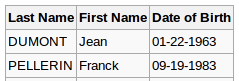
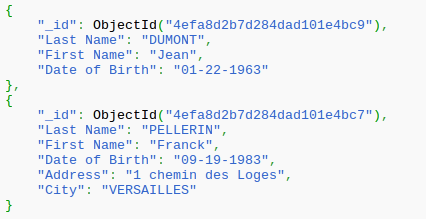
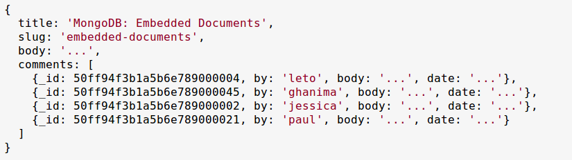
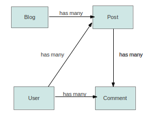
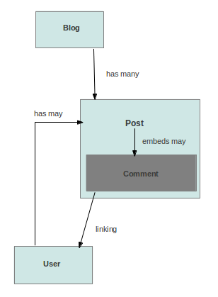

Using MongoDB
to build more powerful solutions than
MySQL (or any RDBMS)
Rails supported RDBMS Database
- MySQL
- SQLite
- PostgreSQl
- Oracle
- etc..
Rails supported NoSQL Database
- MongoDB
- CouchDB
- Cassandra
- Redis
- etc..
MongoDB
MongoDB is an open source document-oriented database system developed and supported by 10gen.
It is part of the NoSQL family of database systems.
Instead of storing data in tables as is done in a "classical" relational database, MongoDB stores structured data as JSON-like documents with dynamic schemas (MongoDB calls the format BSON).
History
- Development of MongoDB began at 10gen in 2007
- In March 2010, from version 1.4, MongoDB has been considered production ready
- The latest stable version, 2.2, was released in August 2012
- Version 2.3 has released in Feb 2013, these versions of MongoDB are for testing only
Collection and Document
An element of data is called a document, and documents are stored in collections. One collection may have any number of documents.
RDBMS Database.

MongoDB collection

Embedded documents
Embedded documents are good for fast queries. The embedded documents are also always available with the parent documents, without the need to run further queries to retrieve them.

Main features of MongoDB
- Migrations are Dead
- Array Keys
{
"_id": ObjectId("5088e157b1a5b634b6000058"),
"roles": ['Admin','Manager', 'Accountant']
}
Query:
db.users.find({roles: {$in: ['Manager']}})
Main features of MongoDB
{
"_id": ObjectId("5088e157b1a5b634b6000786"),
"address": {'street_1' => 'A B C','street_2' => 'MG Road',
'city' => 'pune', 'state' => 'MH'}
}
Query:
db.accounts.find({"address.street_1": 'A B C'})
db.accounts.find({"address.city": /^p/i})
Main features of MongoDB
Map Reduce
Map-reduce operations can handle complex aggregation tasks.
High performance
- No joins and embedding makes reads and writes fast
- Indexes including indexing of keys from embedded documents and arrays
Horizontal scalability
- Automatic sharding (auto-partitioning of data across servers)
Blog Application Using RDBMS

Blog Application Using MongoDB

Simple queries
Query : Lets say I want to get all the posts who have got the comment after 31st Dec 2012.
SELECT `posts`.* from `posts` INNER JOIN `comments` ON `comments`.`post_id` = `post`.`id` where `comments`.`created_at` >= '2012-12-31 00:00:00';
Using MongoDB : Users embbeds many events
db.posts.find({'comments.created_at': { $gt : ISODate("2012-12-31T00:00:00.511Z")}})
Mongo Object Mappers for Ruby
- MongoMapper
- Mongoid
- Mongo ODM
- Mongo Model
Why we choose Mongoid
- Excellent documentation
- Active community
- Compatibility with other projects/gems
- Similar API to ActiveRecord
- Uses ActiveValidation
- Mongoid Extras: Paranoid Documents, Versioning, Timestamping
Compatible Gems with Mongoid
- Devise - Authentication solution for Rails based on Warden. Supports Mongoid out of box
- Carrierwave - Simple and flexible way to upload files from Ruby Application.
- Geocoder - complete geocoding solution for Rails. Adds geocoding by street or IP address, reverse geocoding, and distance queries
- Mongoid-rspec - RSpec matchers and macros for Mongoid.
Getting Started
Include in Gem file
gem "mongoid", "~> 3.0.21"
Run the install for Mongoid
rails generate mongoid:config
That's it!
Development with MongoDb/Mongoid
- Generating models is the same using console as with ActiveRecord.
rails generate model User name:string email:string role:array
- No migration needed!
- Take advantage of embedded documents in models where applicable for increased performance.
Fields available for Mongoid
- Array
- BigDecimal (Stored as a String)
- Boolean
- Date
- DateTime
- Float
- Hash
- Integer
- Range
- String
- Symbol
- Time
Mongoid Document
class User
include Mongoid::Document
include Mongoid::Timestamps
field :name, type: String
field :email, type: String
field :role, type: Array
validates :name, :email, :presence => true
end
Persisting in the Controller
def create
@user = User.new(params[:user])
@user.save
end
def update
@user = User.find(params[:id])
@user.update_attributes(params[:user])
end
Indexing
class User
include Mongoid:Document
field :email, type: String
index({email: 1},{ unique: true})
end
Indexing on multiple fields -
index({ email: 1, name: -1 }, { unique: true })
To create indexes in the database use the rake task
rake db:mongoid:create_indexes
Relations in Mongoid - Embedded
Embedded Relations - stored inside other documents in the database.
class Blog
include Mongoid::Document
embeds_many :posts
end
class Post
include Mongoid::Document
embedded_in :blog
end
Embedded Posts
{ "_id": ObjectId("4e9ba47fcdffba523f000004"),
"name": "Joshsoftware Blog",
"posts":
[
{"content": "Presentation on MongoDB",
"_id": ObjectId("4e9ba47fcdffba523f000005")}
]
}
Polymorphic Behavior
class Image
include Mongoid::Document
embeds_many :comments, as: :commentable
end
class Document
include Mongoid::Document
embeds_many :comments, as: :commentable
end
class Comment
include Mongoid::Document
embedded_in :commentable, polymorphic: true
end
Relations in Mongoid - Referenced
Referenced Relations - stores reference to a document in another collection, typically an id
class Blog
include Mongoid::Document
has_many :posts, dependent: :delete
end
class Post
include Mongoid::Document
belongs_to :blog
end
Many to Many Relationship
class Tag
include Mongoid::Document
has_and_belongs_to_many :posts
end
class Post
include Mongoid::Document
has_and_belongs_to_many :tags
end
Querying
Queries are type Criteria, which is a chainable and lazily evaluated wrapper to a MongoDB dynamic query.
Chainable queries include:
all_in all_of
also_in and
any_of asc
desc distinct
excludes includes
limit near
not_in only
order_by skip
where without
Query Examples
User.find_or_create_by(name: 'kiran')
User.where(name: 'kiran').destroy_all
User.where(:age.gt => 18)
User.any_in(name: ['sandip', 'shailesh', 'ninad'])
User.without(:first_name, :last_name)
User.desc(:first_name, :last_name)
User.near(:location => [30.983, 45.543])
Versioning with Mongoid
1. Embeds a version of the object on each save.
2. Can skip versioning and also set the max versions.
3. Add to model -
include Mongoid::Versioning
Versioning Example
{ "_id": ObjectId("4e9ba47fcdffba523f000004"),
"name": "Joshsoftware Blog",
"created_at": ISODate("2011-10-17T03:58:53Z")
"updated_at": ISODate("2011-10-17T03:58:53Z")
"version": 3
"versions": [
{ "name": "Josh",
"created_at": ISODate("2011-10-17T03:58:53Z")
"version": 1
},
{ "name": "Josh Software",
"created_at": ISODate("2011-10-17T03:58:53Z")
"version": 2
},
]
}
Drawbacks of MongoDB
- Indexes take up a lot of RAM. They are B-tree indexes and if you have many, you can run out of system resources really fast.
- Data size in MongoDB is typically higher due to e.g. each document has field names stored it
- No support for transactions because only single-document operations are atomic with MongoDB. Only certain atomic operations are supported, at a single document level
Reference
http://www.10gen.com
http://www.mongoid.org
http://docs.mongodb.org/
Thank You
Q&A